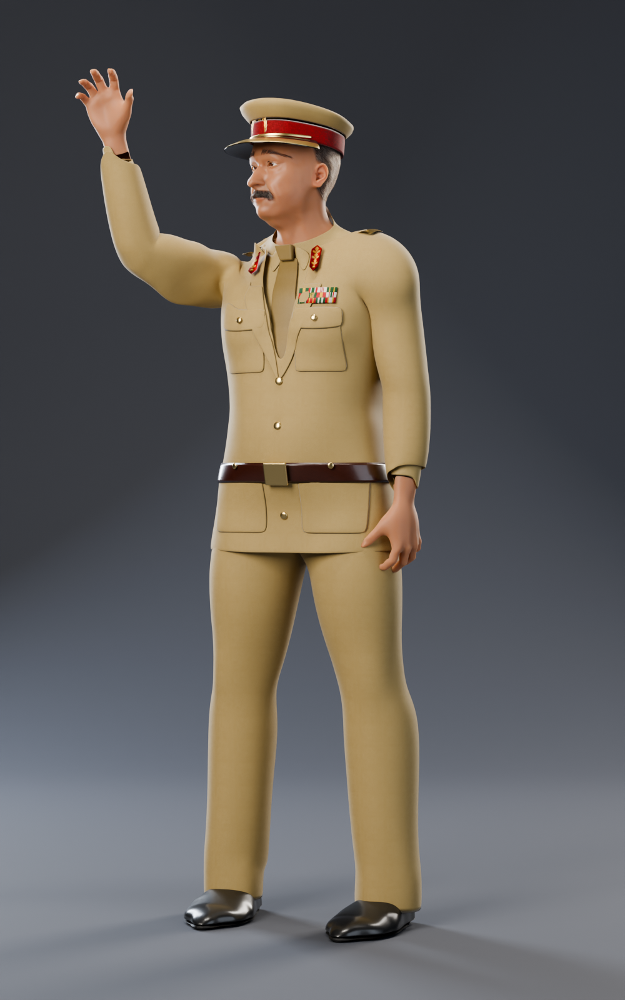
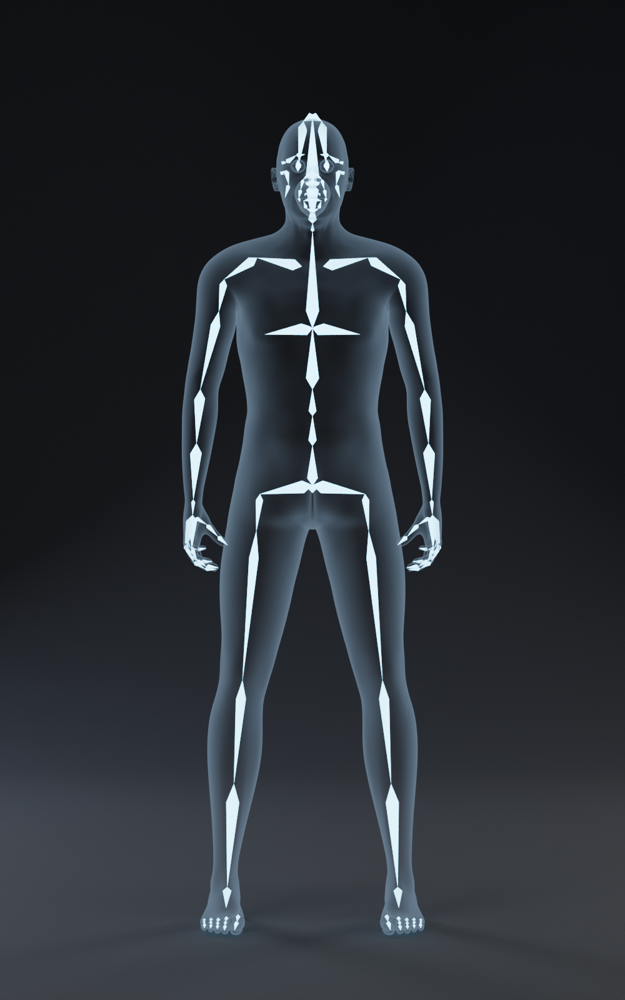
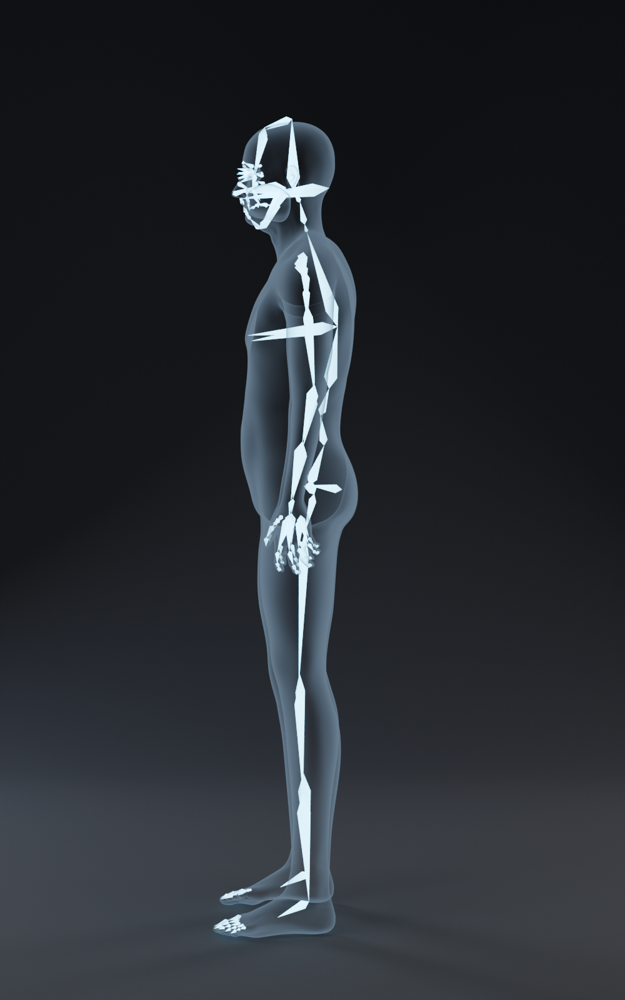

حرکت: لاس پورته، موسکا
اسکلیټ — مخامخ
اسکلیټ — اړخد بدن ځانګړنې
· بشپړ انساني بدن (MakeHuman، CC0) له ریښتینو تناسباتو سره
· ۱۶۳ هډوکي: ملا، غاړه، اوږې، څنګلې، مړوندونه، ټولې ګوتې، زنګونونه، پښې، ژامه
· د پوستکي وزنونه: پوستکی او جامې له هډوکو سره سم کږېږي
· ۱۰ د مخ حالتونه: سترګې پټول، خوله خلاصول، موسکا، وروځې
· پوستکی: SSS، مسامات (هیګزفیلډ)، د ږیرې سیوری
· سترګې: هیګزفیلډ ایرس + لمده قرنیه؛ اصلي وېښتان، وروځې، باڼه
· GLB د three.js لپاره: ۲۴.۴ MB